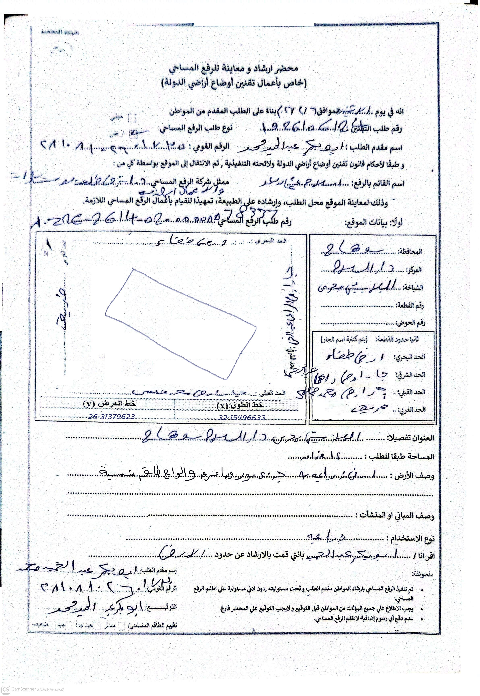
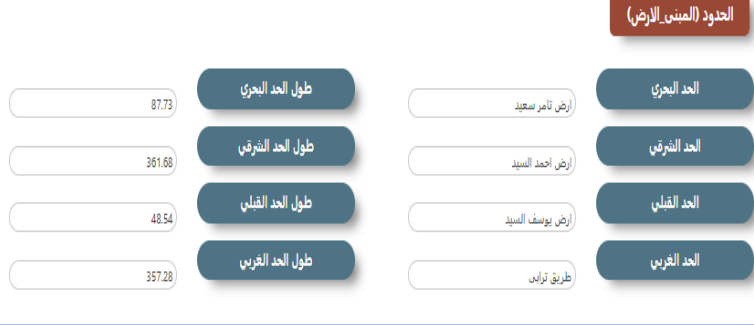

الاشتراطات الفنية لمراجعة طلبات الرفع المساحي
مرجع تشغيلي واحد يجمع خطوات العمل على المنظومة، ضوابط محضر الإرشاد، قواعد صياغة الوصف والحدود، ومتطلبات الملفات الرقمية المطلوبة لإنجاز طلب التقنين من استلام الطلب حتى صدور الشهادة.
محضر الإرشاد — الضوابط العامة
محضر الإرشاد والمعاينة للرفع المساحي هو المرجع الورقي الذي يجب أن تطابقه بيانات المنظومة حرفيًا.
تُكتب رقم طلب التقنين ورقم طلب الرفع المساحي في المكان المخصص بالمحضر، مع مطابقتهما بالمنظومة.
يُرفَق المحضر واضحًا بالقلم الجاف الأزرق فقط — يُمنع أي تعديل بالفوتوشوب أو شطب على أي بيانات فيه.
عند وجوب تعديل بيان، يجب تغيير المحضر بالكامل وتوقيعه من المواطن من جديد.
لا يُسمح بأي اختصارات في المحضر أو المنظومة — مثال: "ش" لا تُكتب بدلًا من "شارع".
يجب أن تكون بيانات المحضر مطابقة بالكامل للبيانات الموجودة على المنظومة، والالتزام بشكل المحضر المعتمد.
اسم صاحب الطلب "المالك" يجب أن يكون مطابقًا لتوقيع المحضر، إلا في حال كان الموقّع محاميًا أو وكيلًا، مع ذكر ذلك في التعليقات.
تُكتب الحدود في المحضر مفصّلة وفي مكانها المخصص، مع التفرقة بوضوح بين حدود الجار وحدود قطع الأراضي المجاورة.

ضوابط توصيف البيانات داخل المحضر
قواعد دقيقة لصياغة الحد ووصف الأرض والمبنى بما يعكس واقع الموقع فعليًا.
يُكتب توصيف الحد كما هو (مبنى سكني / أرض زراعية)، ولا تُكتب "ممر" أو "حديقة" أو "مشاية" وحدها — بل: (ممر أو حديقة ثم جار).
عند وجود حد مشاية مناصفة أو مشاية ضمن حدود صاحب الطلب، يجب ذكر ذلك في تعليق. وفي حال المشاية المناصفة بالتبعية، يوصف ما بعد المشاية (مثال: قطعة أرض).
عند وجود اسم شارع يُكتب كما هو؛ وإن لم يوجد اسم، يُكتب "شارع متفرع من الشارع الرئيسي" مع مطابقة اسم الشارع بين المحضر والمنظومة ومكانه في المحضر.
إذا وُجد اسم شارع في العنوان، يجب وضعه أيضًا في أحد حدود القطعة.
يُوصف الأرض والمبنى وصفًا تفصيليًا مع ذكر كل الإشغالات عليها (غرف – مباني – جمالون – حوائط – أعمدة).
يجب أن تطابق بيانات المحضر نوع الطلب والاستخدام الفعلي على الواقع، حتى لو اختلف عن إرشاد المواطن.
في طلبات الأراضي التي تحتوي أكثر من مبنى، يُوصف ما تحتويه الأرض من مبانٍ وصفًا دقيقًا ومحددًا بكل تفاصيله.
يمكن رفع طلب أرض يوجد على جزء منها مبنى، ولكن لا يمكن رفع طلب أرض مُقام عليها جزء من مبنى.
بيانات المنظومة
تعبئة دقيقة لكل الحقول الخاصة بصاحب الطلب ونوع الطلب قبل التنقل إلى بيانات الحدود.
يجب أن تكون جميع البيانات الخاصة بنوع الطلب مُدخلة بالكامل.
يجب أن يكون رقم الطلب في محضر الإرشاد مطابقًا للرقم الموجود بالمنظومة.
في حالات الأراضي متعددة المباني، يُوصف ما تحتويه من مبانٍ وصفًا دقيقًا ومحددًا في كل تفاصيله.
عند توقيع شخص غير صاحب الطلب، يُكتب تعليق بصفة الموقّع، ويُرفق التوكيل.
إن رُفع نوع طلب مخالف لما قدّمه المواطن، يُذكر أن التغيير تم بعلم وإرشاد المواطن، مع مطابقة ذلك للمحضر والمنظومة.
تُكتب مساحة الأرض بالفدان في مكانها المخصص، مع التأكد من صحة تحويلها من المتر إلى الفدان.
تُرفق صورة بطاقة صاحب الطلب، وإن كان الموقّع وكيلًا تُرفق أيضًا صورة التوكيل وصورة بطاقة الشخص الموقّع على المحضر.

الحدود والمرفقات المساحية
حزمة الملفات الميدانية التي تثبت صحة الرفع قبل إرسال الطلب.
تُكتب الحدود مطابقة لما تم رفعه ومطابقة للمحضر.
تُوصف الإشغالات على الأرض الزراعية مع إرفاق صور فوتوغرافية للأرض وما عليها من إشغالات.
تُرفع الحدود الخارجية للمباني مع الوصف الخارجي وتحديد النشاط المستخدم (سكني – تجاري) أو نوع الأرض (زراعي – بور).
يجب التأكد من إرفاق ملف Row Data وملف RINEX.
تُرفق صورة موقع الطلب (Location) من صورة جوية واضحة.
يجب إرفاق صور لجهاز الـ GPS، وصورة للأرض مع إظهار التاريخ داخل الصورة.
يجب التأكد من تواجد كافة المرفقات، ومراجعة تطابق البيانات بين المحضر والمنظومة مراجعة جيدة قبل الإرسال.

صياغة الوصف — الأراضي الزراعية والمقام عليها مبانٍ
أمثلة معتمدة لصياغة وصف العقار بحسب حالته الفعلية.
عند وجود جزء منزرع وجزء "بور" ومبانٍ متفرقة ضمن المساحة، يُذكر إجمالي المساحة، ثم توزيع الاستخدامات، ثم كل مبنى برمزه ومساحته.
تُذكر المساحة الإجمالية للأرض، ثم كل مبنى برمزه ونوعه ومساحته، على أن تكون مساحات المباني ضمن إجمالي مسطح الأرض.


صياغة وصف المبانى
تحدَّد طريقة الصياغة والملف الواجب رفعه (أرض + مبنى / مبنى فقط) وفق العلاقة بين مساحة الأرض ومساحة المبنى.
يُحوَّل الطلب تلقائيًا إلى "أرض مقام عليها مبنى".
عند وجود أكثر من مبنى بنفس الأرض، يُوصف كل مبنى برمزه ومساحته على حدة، مع كتابة مساحة وحدود الأرض ورفع الأرض والمبنى معًا.

الارض التى يقطعها طريق (رئيسى فقط)
أربع حالات متكررة تتطلب معالجة خاصة قبل الرفع على الشيب فايل والمنظومة.
تُقسّم القطعة إلى (A، B) وتُوصف كل قطعة على حدة مع ما عليها من مبانٍ. تُفرَّغ مساحة الطريق من مساحة الأرض، وتُضاف مساحة كل قطعة في المنظومة والشيب فايل، ويُوضع الطريق والأرض في الكاد وصورة الكاد.
يُذكر إجمالي مساحة المبنى ثم مساحة الجزء المراد تقنينه منه. تُكتب مساحة الجزء في المنظومة مع حدود الأرض، ويُرفع الجزء والكل معًا.
لا يمكن رفع جزء من أرض؛ يُرفع فقط الجزء المراد تقنينه بعد تحديده على الخريطة.
في طلبات الأراضي لا يمكن رفع أرض مُقام عليها جزء من مبنى.
في طلبات الأراضي لا يمكن رفع أرض تقطعها طريق دون تفريغ مساحته.
عند ضم مساحة الأرض ضمن المبنى، يُشترط أن تكون الأرض محاطة بسور.


صياغة الحدود
لكل حد أربعة اتجاهات: بحري، قبلي، شرقي، غربي — تُوصف وفق ظاهرتها الجغرافية الفعلية لا باسم الجار وحده.
الحد البحري يأخذ اتجاهه طبقًا لزاوية الميل الأصغر (الشمال الجغرافي).
الحدود من نوع (مشاية – حديقة – ممر – مصرف) تُكتب: مشاية ثم الظاهرة التي تليها — مثال: مشاية ثم قطعة أرض.
عند وجود أكثر من ظاهرة في الحد نفسه يُكتب: "بعضه ... وبعضه ..." — مثال: بعضه قطعة أرض وبعضه مبنى سكني.
إذا كان الجار منشأة عامة تُكتب صراحة: (مصنع – مدرسة – مستشفى ... إلخ).
إذا كان الحد أرضًا تُكتب: (قطعة أرض – أرض فضاء – أرض محاطة بسور).
إذا كان الحد مبنى تُكتب: (مبنى سكني – جار مبنى).
يُمنع منعًا باتًا استخدام أسماء الجيران وحدها في الحدود دون توصيفها جغرافيًا (مبنى – أرض – شارع ... إلخ).
يُمنع منعًا باتًا كتابة "باقي الملك" في الحدود.

صورة كروكي الطلب
رسم توضيحي أبيض وأسود يرافق كل طلب، مأخوذ من الكاد، ويجب أن يعكس اتجاه الشمال وحدود القطعة بدقة.
يُوضع سهم الشمال مشيرًا إلى اتجاه الشمال، أقصى الجهة الشمالية الغربية من الصورة.
تُوضع نقاط الإحداثيات في صورة كروكي الطلب.
يجب أن تكون البيانات (سهم الشمال) واضحة وبحجم مناسب.
صورة الكروكي تكون بالأبيض والأسود فقط.
يجب أن توضّح الصورة الحدود الفاصلة في الأراضي.
تُرمَّز المباني ويُوضع مفتاح للترميز.
الشيب فايل
ملف GIS منظم يحتوي طبقات الأرض والمباني ونقاط الرفع بإسقاط موحّد وسمات (Attributes) محددة.
يُرسَل الملف محتويًا على ثلاث طبقات: أرض – مبانٍ – نقاط رفع. في حال قطع الطريق للأرض، تُضاف طبقة للأرض بعد تفريغ الطريق منها، مع ترميز الأراضي.
يجب مراعاة أن يكون إسقاط الملف WGS 1984 UTM حسب موقع الطلب جغرافيًا.
| الطبقة | الحقول المطلوبة (Attributes) | ملاحظة |
|---|---|---|
| طبقة الأرض | رقم الطلب، النوع، المساحة | مضلّع واحد لكل طلب |
| طبقة المباني | رقم الطلب، الرمز، النوع، المساحة | رمز مطابق لصورة الكروكي |
دورة عمل الطلب — من الاستلام إلى الشهادة
الخلاصة الكاملة لرحلة الطلب عبر خمس مراحل رئيسية.
تسجيل الطلب وتوزيعه على طقم الرفع التابع لمنطقته، مع التواصل مع المواطن لتحديد موعد الرفع خلال 72 ساعة من تاريخ تقديمه.
توجّه الطقم الميداني لرفع الطلبات الموزَّعة طبقًا لتعليمات المركز التكنولوجي لتقنين أراضي الدولة، وجمع كافة البيانات والصور المطلوبة.
إدخال البيانات التي جمعها الطقم عبر المكاتب الفنية التابعة، وتحضير الطلب ليتناسب مع التعليمات المتبعة.
مراجعة كافة بيانات الطلب والتأكد من مطابقتها للواقع، واستيفائها لكافة التعليمات الصادرة.
صدور شهادة المطابقة بعد استيفاء الطلب لكافة التعليمات المطلوبة.
فيديوهات الشرح
لا توجد فيديوهات مضافة بعد.